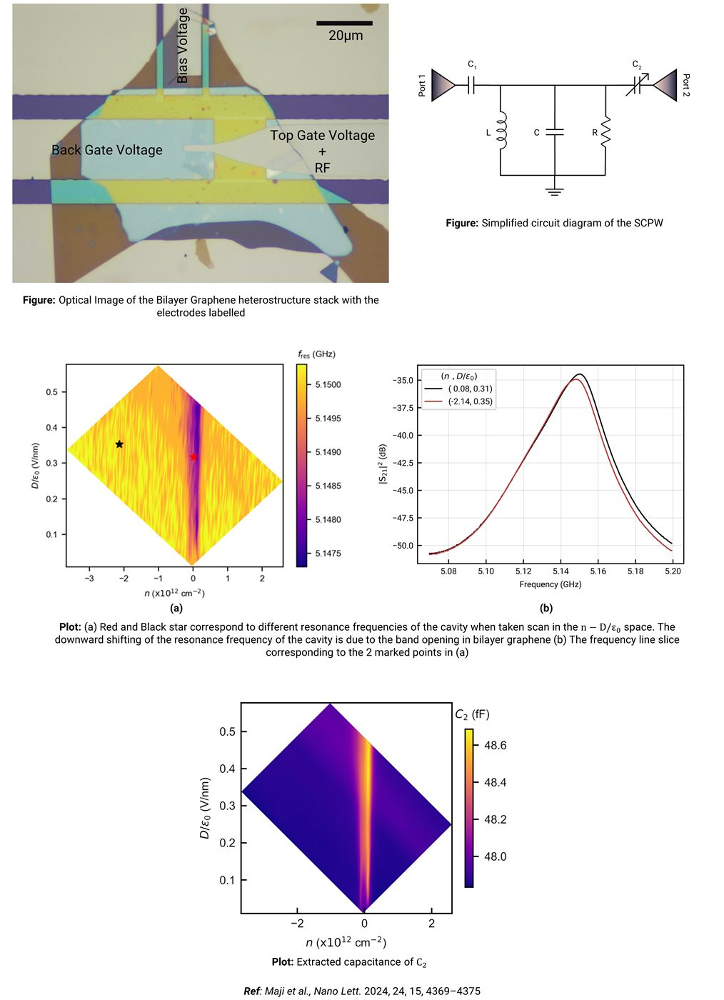
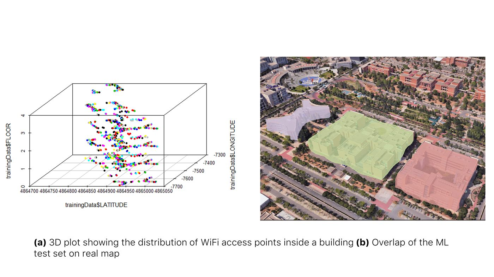
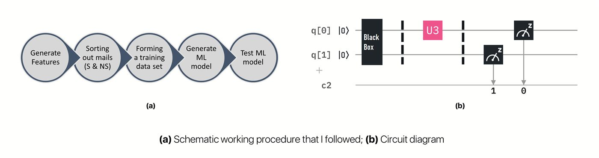
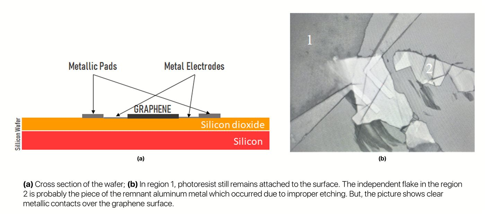
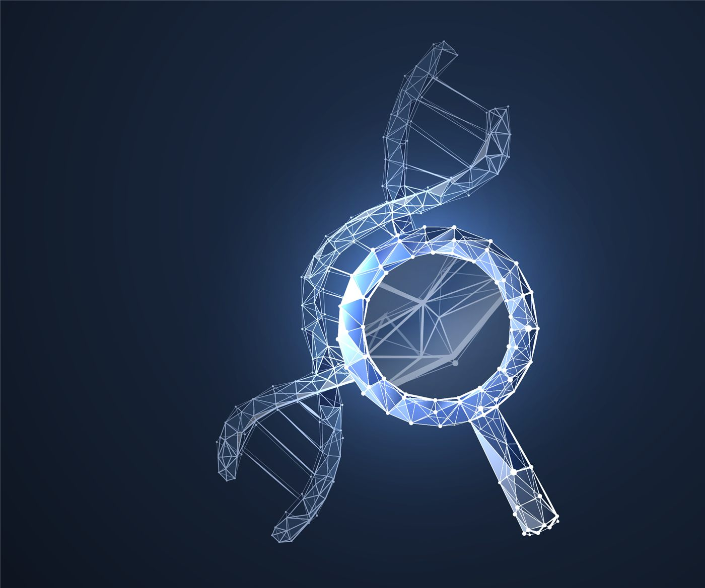
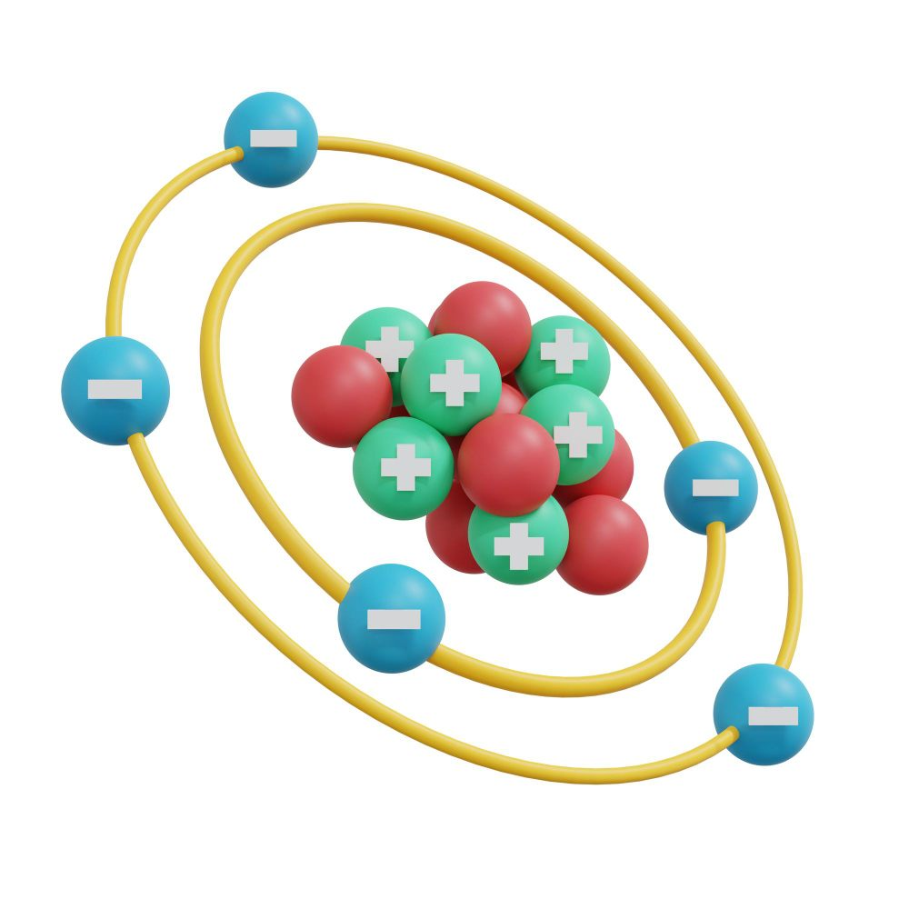
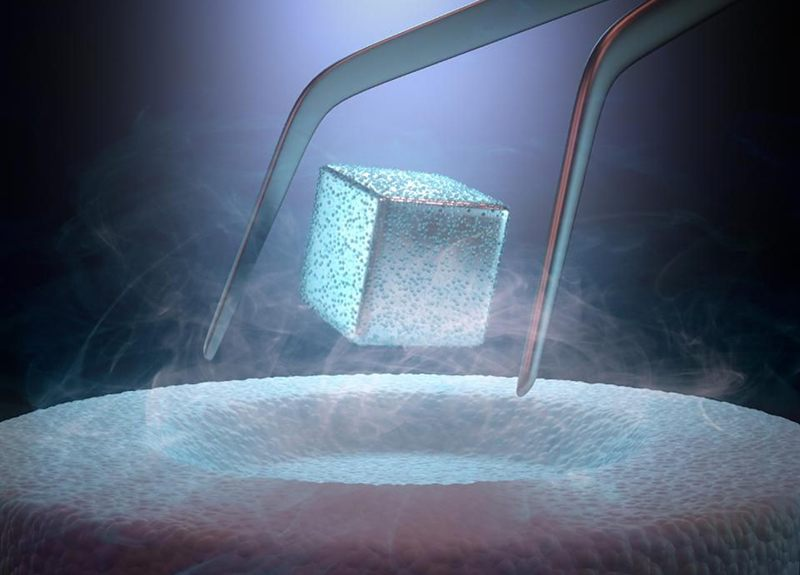
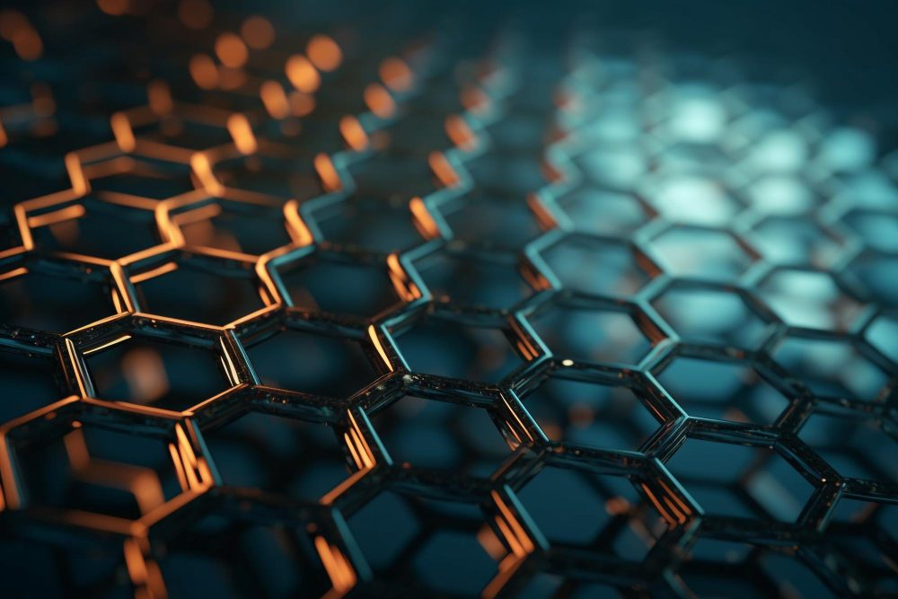
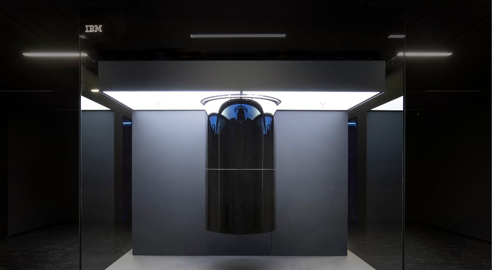

Solid-state physics · 2D nanoelectronics
Soumyajit Samal
PhD at LMU Munich
I study how electrons behave in atomically thin materials at low temperatures.
01About me
Hello! I am Soumyajit Samal, a physicist working on two-dimensional nanoelectronic devices. I am pursuing a PhD at Ludwig-Maximilians-Universität München (LMU Munich) under Prof. Dmitri Efetov. Before that, I did my master's thesis in the Nanoelectronics group of Prof. Mandar M. Deshmukh at the Tata Institute of Fundamental Research (TIFR), Mumbai, as part of my BS-MS at IISER Berhampur, where I also minored in computer science.
My doctoral research addresses one of the central open problems of condensed-matter physics: the origin of high-temperature superconductivity. By controlling carrier density and dimensionality and measuring the devices at cryogenic temperatures, I aim to map how the superconducting state forms, evolves and competes with other phases in the two-dimensional limit.
-
Physicist
Fabricating and measuring devices made from 2D materials at low temperatures.
-
Technical writing
Writing and editing about science for a general audience and the scientific community.
-
Illustration
Scientific figures, posters and graphic design.
02Education
-
Sept 2024 —
Ludwig-Maximilians-Universität München (LMU Munich), Germany
Topic: Twist-engineered pathways to high-temperature superconductivity
-
2023 — 2024
Tata Institute of Fundamental Research (TIFR), Mumbai, India
Topic: Superconducting waveguide resonator-assisted microwave probing of 2D materials
-
2019 — 2024
Indian Institute of Science Education and Research (IISER), Berhampur, India
- Finance and tech advisor, ex-president — Jigyansa, a science communication platform under IISER Berhampur and Vigyan Prasar
- Core team member — Naxatra, the astrocosmo club
- Former secretary and tech team lead — Innovation Incubation and Entrepreneurship Cell (IIEC)
- Research demonstrator — STREAM, open day at IISER Berhampur
-
2018
DAV Public School, Pokhariput, Bhubaneswar, India
-
2016
DAV Public School, Pokhariput, Bhubaneswar, India
03Publications
04Research experience
Superconducting coplanar waveguide resonator-assisted microwave probing of 2D materials MS thesis Prof. Mandar M. Deshmukh · TIFR, Mumbai
Moore's law predicts that the number of transistors on a chip doubles roughly every two years, but with silicon we are approaching the quantum limit beyond which transistors cannot be scaled down. Monolayer TMDCs could revolutionise transistors, yet their high contact resistance to metals has pushed most work towards optical measurements. We propose probing such materials with RF instead: a van der Waals heterostructure (a bilayer graphene stack) is capacitively coupled to a transmission-line resonator, and its capacitance and density of states are extracted. The resonator operates in the 1–10 GHz range with a quality factor of about 500. The technique was also tested on twisted double bilayer and twisted trilayer graphene and performs well. Part of this work was published in Nano Letters.

Numerical modelling and simulation of DNA detection using graphene FETs Dr. Achanta Venugopal · TIFR, Mumbai
Simulating and analysing DNA detection with graphene field-effect transistors (GFETs). Using Monte Carlo simulation and numerical methods, I calculated the electrostatic potential distribution and the drain-source current (IDS), and visualised the potential distribution and IDS–VG / IDS–VDS characteristics. The animation shows the voltage variation as a DNA molecule approaches: the surface potential becomes distorted. Code on GitHub →
Determining the impact of dielectric environment on graphene properties by deep learning Prof. Radha Krishna & Dr. Gopi Krishna Guntupalli
Analysed Raman spectra of graphene in different charge and dielectric environments. The data was augmented with additive noise and peak shifting, and a convolutional neural network (CNN) trained on it reached 99% accuracy. Code on GitHub →
Review on MXene-based devices for human–machine interaction Dr. Kaushik Parida · IIT Roorkee
Contributed to a review on MXene-based devices and how machine learning can enhance their utility (published in Nanoscale). In a related project on piezoelectric and triboelectric devices, I developed an algorithm that classifies actions such as tapping, folding and bending.
WiFi indoor navigation using quantum machine learning Dr. Ahmed Farouk · Wilfrid Laurier University, Canada
A quantum simulation of a CML algorithm in Qiskit, and a model that predicts a person's location inside a large building from the WiFi access points that cover it. Such models could help assess the aftermath of natural disasters on buildings.

Methods of preparation of graphene Dr. Pranat Jain · IISER Berhampur
A reading project on top-down and bottom-up methods of preparing graphene, and on techniques that increase the yield of these processes.
Spam detection using quantum tools Prof. Prashanta Kumar Panigrahi · IISER Kolkata
Designed a machine learning algorithm to filter spam emails using the IBMQ interface and a real 5-qubit quantum computer, IBM X2, built to perform well even in noisy conditions. Code on GitHub →

Fabrication of microscale metallic contacts on mechanically exfoliated graphene Dr. Satyaprakash Sahoo · Institute of Physics, Bhubaneswar
Mechanically exfoliated graphene with the Scotch-tape method, then fabricated Au, Ag and Al contacts using photolithography. I tried several circuit designs, photoresist (ma-P 1205) thicknesses and photoresist cleaning processes.

Detailed reports on each project are available on request.
05Projects with code

Numerical modelling and simulation of DNA detection using graphene FETs
Monte Carlo and numerical methods for the electrostatic potential and charge density in a GFET channel, with IDS–VG and IDS–VDS characteristics in the presence of DNA.

Wavefunction of nucleons inside a spherical nucleus
Solving spherical Bessel functions with the Newton–Raphson method to find wavefunctions in a spherical potential well.

Predicting the critical temperature of superconducting materials
An ML model that predicts the critical temperature of materials, a cheaper and faster route than laboratory screening, with 98.8% accuracy.

Graphene environment from Raman spectroscopy and deep learning
Predicting charge density and dielectric environment of graphene from Raman spectra, which vary between setups and are hard to analyse by hand.

Spam detection using quantum tools
A quantum machine learning email spam filter, trained on a simulator and then tested on a real quantum computer.
06Skills
Experimental
- Nanofabrication of van der Waals heterostructures
- Electron-beam lithography
- Photolithography
- Microwave simulations
Computational
- Data analysis & representation
- MATLAB
- Python
- Machine learning
Creative & other
- Graphic design
- HTML & CSS
- Adobe Creative Cloud
- Team management
07Design portfolio
08Gallery
Photographs I've taken, and the people and places along the way.
09Contact
I'm happy to hear about research, collaborations, or anything else. Email is the best way to reach me.